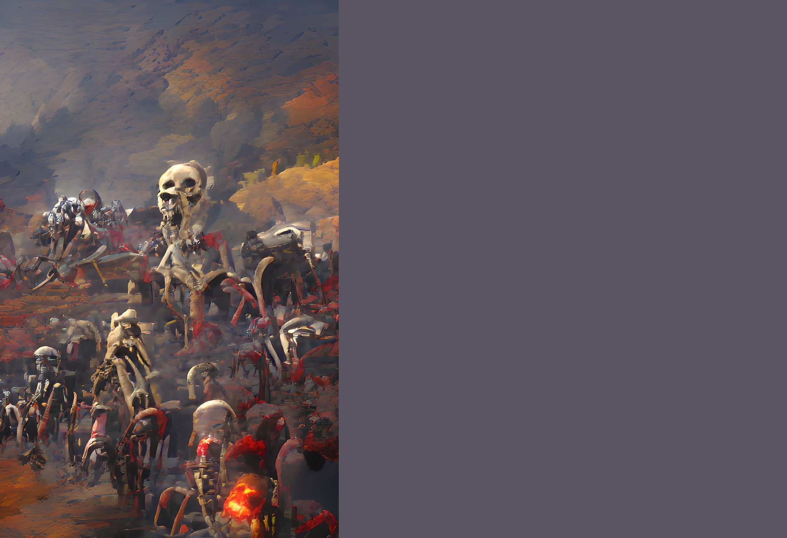

The Horde Rises
As the invaders pass away, they return to haunt the still living to drive them away from the land.
SETUP:
Put 1 {presence} and 1 {skeleton} in the highest numbered land without invaders.
Play Style:
Uses a special resource, {skeleton}, which are generate from the invaders destroyed in your lands.